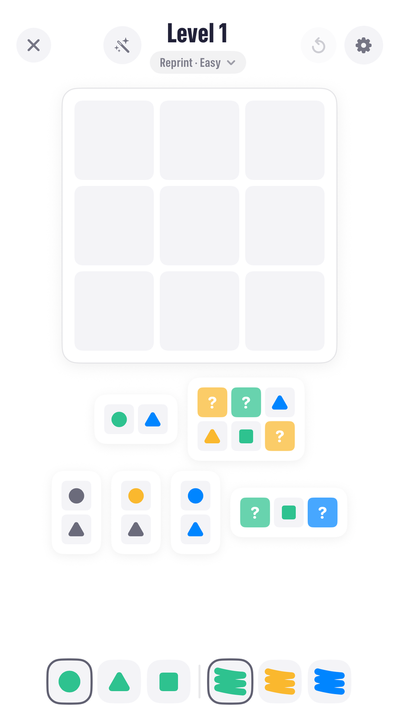
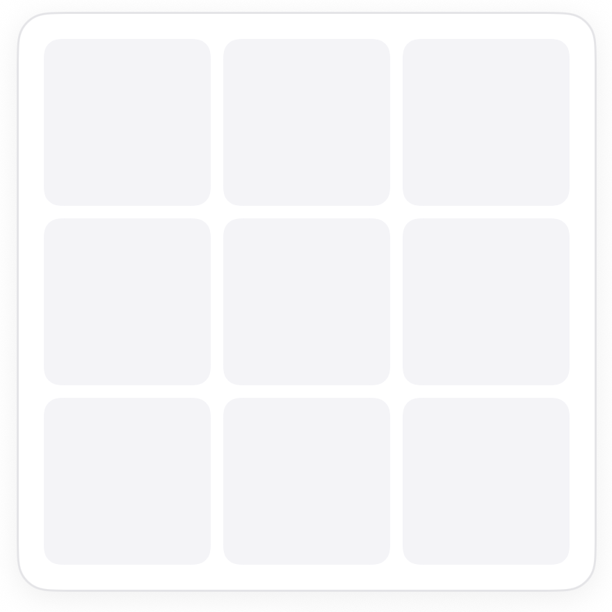
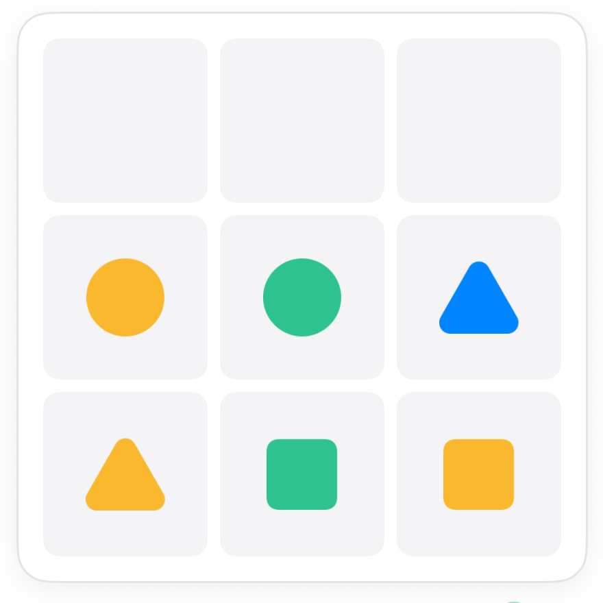
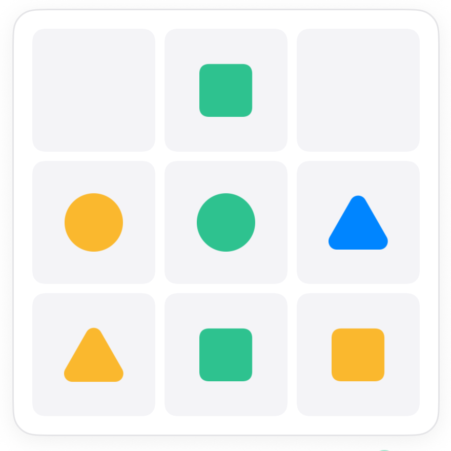
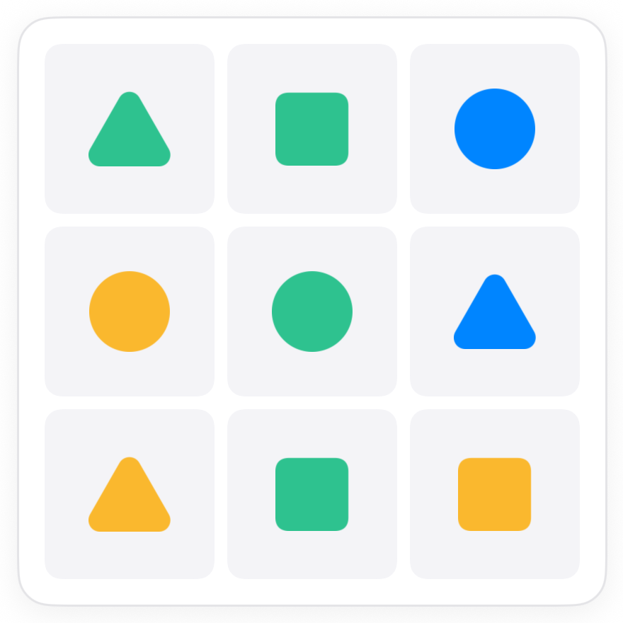

How to play Reprint Peeks.
Reprint is Peeks with a misprint. One shape-and-colour tile shows up twice on the board, and one pair never shows up at all. The peeks are still exactly right, so they outrank the one-of-each habit.
The board.
A 3 by 3 board, three shapes, three colours, and six peeks below it. In classic every one of the nine pairs would appear once. Here one is printed twice and one is missing.

The rule.
You do not know which tile repeats until the peeks show it. Paint what the peeks say and let the repeat reveal itself.
Paint the peeks, then spot the repeat.
Start as in classic: place the peeks that only fit one way and paint their tiles. When a peek asks for a tile that is already on the board, that is the reprint. Paint it anyway.




Common questions.
How do I know which pair is missing?
You will not need to. The peeks pin every square; the missing pair is just the one that never gets called.
Can the repeated tiles be next to each other?
Yes. There is no spacing rule. Two identical tiles anywhere on the board is the whole twist.